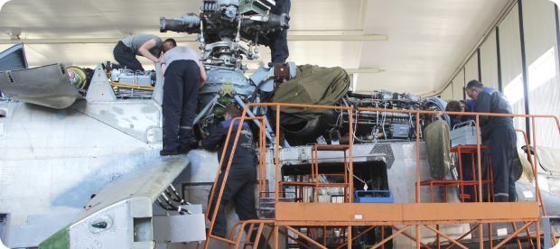
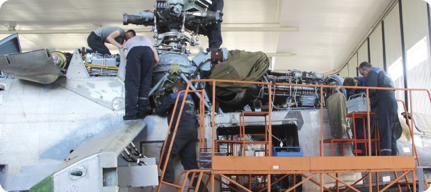
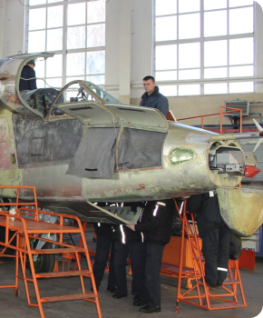
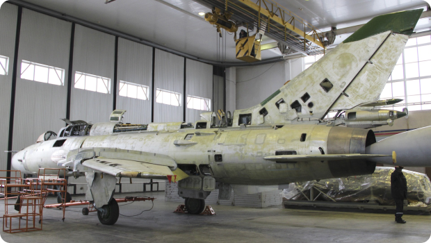
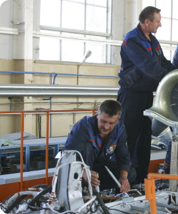
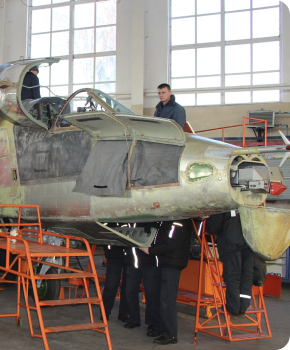
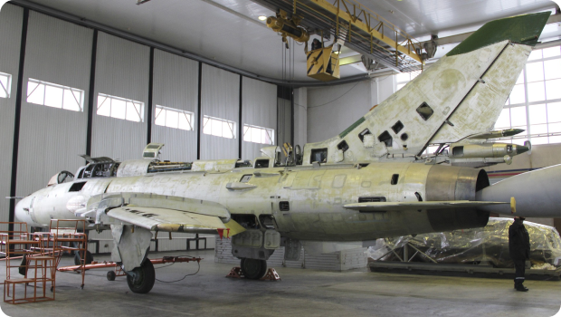
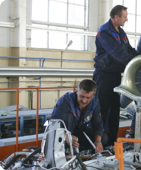

Главная
.png)
О нас
Ремонт авиационной техники
Производственные площади, оснащённость оборудованием
и документацией, кадровый потенциал предприятия соответствует
требованиям конструкторской и нормативно-технической
документации на выполнение различных видов ремонта авиационной
техники, их комплектующих изделий и позволяет осуществить полный
цикл их ремонта на базе ОАО «558 АРЗ».
Предприятие имеет большой опыт ремонта (в том числе второго
и третьего капитального ремонта), модернизации и комплексной
логистической поддержки самолётов типа МиГ-29, Су-22, Су-25, Су-27,
Су-30, вертолётов Ми-8, Ми-17, Ми-171, Ми-24, Ми-35. За период с 1981 г.
по настоящее время ОАО «558 АРЗ» выполнен капитально-
восстановительный ремонт более 2000 самолётов и вертолётов
различного типа.
Для выполнения планового ремонта (в том числе второго/третьего
ремонта) специалистами разработчика авиационной техники
совместно со специалистами ОАО «558 АРЗ» разработана техническая
документация для выполнения второго/третьего планового ремонта,
предусматривающая выполнение определённого перечня
дополнительных работ и замен, выполнение бюллетеней
промышленности и технических заданий (ТЗ) для продления
назначенных ресурсных показателей.
 

Детали по доработкам и ТЗ, запасные части и комплектующие изделия
самолётов для выполнения второго/третьего планового ремонта
приобретаются у предприятий-изготовителей покупных комплектующих
изделий и изготавливаются на ОАО «558 АРЗ» по конструкторской
документации разработчика.
При выполнении капитального ремонта, в процессе дефектации
специалисты ОАО «558 АРЗ» проводят исследование технического
состояния авиационной техники по специальным программам,
разработанными предприятиями-изготовителями АТ. По результатам
исследования специалисты ОАО «558 АРЗ» отрабатывают акты
исследования техники и заключения о возможности продления
им назначенных ресурсных показателей.
В объём ремонта входит также ремонт средств наземного
обслуживания самолёта и агрегатов съёмного авиационного
вооружения в комплектации 1:1. В процессе ремонта производится
замена на новые (не имеющие наработки): аккумуляторных батарей,
комплекта носимого аварийного запаса (НАЗ), парашютных систем,
комплекта пиросредств, шин.
В процессе ремонта выполняется наружная покраска планёра
сертифицированными полиуретановыми лакокрасочными
материалами.
Для обеспечения гарантийного обслуживания на базу Заказчика
направляется группа специалистов ОАО «558 АРЗ» с необходимым
технологическим оборудованием и имуществом технической аптечки.
 






Цех №1
Цех №2
Цех №3
Цех №4
Цех №5
Цех №6
Цех №7
Цех №8